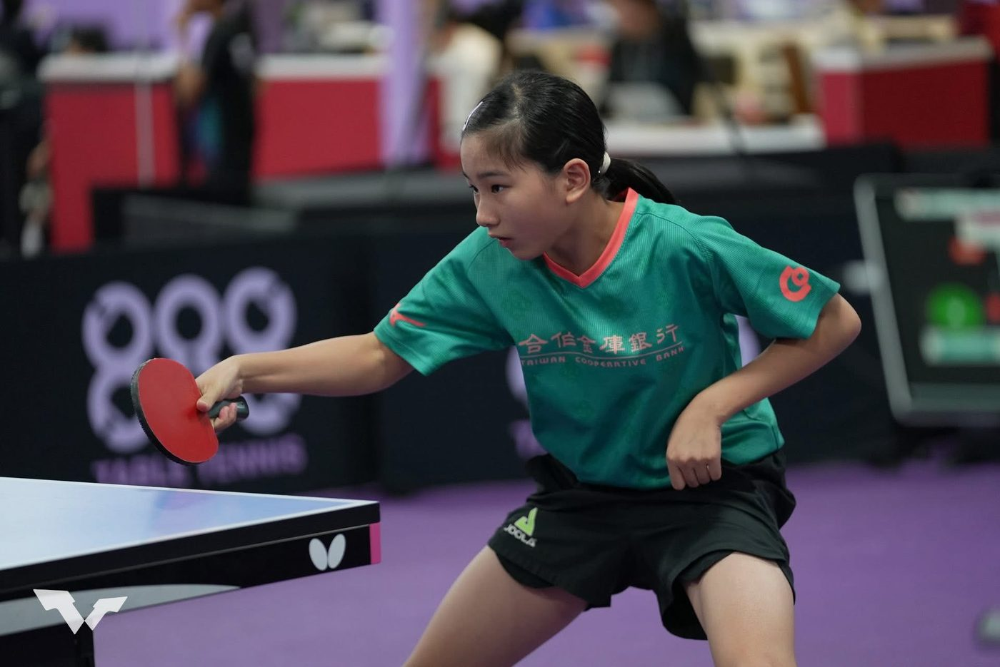
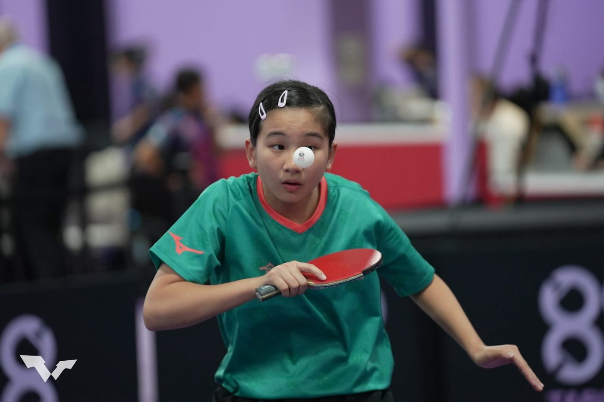

01我的故事
我的桌球之路
自小學三年級接觸桌球以來，逐漸發現自己對桌球的熱愛，憑藉著堅持與努力，在五、六年級時分別入選 11 歲及 13 歲少年國手，並代表中華台北隊前往上海參加「第32屆東亞希望杯乒乓球錦標賽」，獲得團體第五名的佳績。


自小學三年級接觸桌球以來，逐漸發現自己對桌球的熱愛，憑藉著堅持與努力，在五、六年級時分別入選 11 歲及 13 歲少年國手，並代表中華台北隊前往上海參加「第32屆東亞希望杯乒乓球錦標賽」，獲得團體第五名的佳績。


歷屆成績 · 更新於 2026/08/10
115年17歲青少年桌球排名賽
115年15歲青少年桌球排名賽
訓練與參賽計畫
深耕 WTT 青年系列賽，力拼 U15 世界排名前五，於亞洲青少年桌球錦標賽及世界青少年桌球錦標賽，積極取得佳績，提升國際競爭力。
排名躍升： 透過全年 6-8 站 WTT Youth 系列賽累積積分，目標於 2026 年底進入 U15 世界排名前 5 強。
積分戰略： 上半年鎖定 WTT Youth Contender 賽事，穩定進入 4 強，將排名推升至前 50 名。下半年爭取 WTT Youth Star Contender參賽資格，挑戰決賽，獲取進入世界前 5 的關鍵積分。
代表隊資格： 參與青少年亞錦賽或世錦賽，爭取國家榮譽。
我想達到…
時間： 1月-4月
地點： 南門國中桌球室
訓練方式：多球訓練 與 基礎體能堆疊。
詳細內容：技術訓練： 每日 2,000 顆發球練習，拆解正反手攻球、搓球、拉球等基礎動作，建立極高的穩定性。步法訓練： 側向併步、交叉步的定點與不定點移動，強化下肢支撐力。體能強化： 每週重量訓練，專注於大肌肉群（深蹲、硬舉）與爆發力（縱跳、藥球投擲）。預期指標： 建立強大的體能儲備，單項技術動作失誤率低於 $5%。
時間： 5月-9月 (依 WTT 賽事滾動調整)
地點： 南門國中桌球室
方式內容：
戰術演練 (賽前 2 週)： 進入「單球對抗」，模擬 WTT 對手的球路（如歐洲力量型、日本速度型）。
以賽代訓： 透過 WTT 賽事累積世界排名積分，並在比賽中檢驗技術缺點。
時差與環境適應： 提前抵達賽地，針對當地的球桌彈性、場地燈光、球速進行調校。
心理韌性： 針對 WTT 採用的 5 局 3 勝或 7 局 4 勝制，進行高壓下的關鍵球處理訓練。
預期指標： WTT 世界排名提升（目標進入前 100 名），全國大賽爭取獎牌。
時間： 9月-12月
地點： 居家、物理治療診所、運動醫學中心。
方式內容：
主動修復： 徹底處理賽季累積的運動傷害。
技術盤點： 分析 WTT 賽事錄影，找出面對國際選手時的失分模式。
心理重整： 暫時脫離高壓比賽環境，進行心理諮商與放鬆，避免「選手倦怠」。
預期指標： 備戰明年度青少年排名賽。
側向移動爆發力： 使用梯子操、側向跨步跳、六角球反應練習，強化桌邊橫向位移速度。
核心穩定與旋轉力量： 藥球投擲、俄羅斯轉體，提升擊球時腰腹帶動手部的爆發力（對拉必備）。
下肢支撐： 負重深蹲、分腿蹲，確保在高頻率跑位中重心的平穩。
敏捷與手眼協調： 定向神經反應訓練，模擬接發球時的快速預判。
發球精準度： 每日 1,000-1,500 顆。練習長短球、轉不轉球及側旋的隱蔽性，要求落點誤差不超過 5 公分。
接發球技術： 強化「反手拱」與「擺短」的質量，強調接發球後的銜接穩定性。
中遠檯相持： 強化連續拉球的旋轉與落點變化，以及在被動狀態下的防守反擊能力。
技術銜接： 步法與擊球的合力（如：側身後的大範圍補位進攻）。
前三板戰術： 發球後的第三板強攻路線設計（例如：發短切長、發側旋拉斜線）。
落點限制： 練習攻擊對手的中路（追身球）或大角度變線，破壞對手節奏。
以柔克剛： 針對力量型選手（如歐洲選手）的快慢節奏切換訓練。
多變戰術： 模擬比分 9:9 以後的發球選擇與博弈心理。
壓力模擬： 在隊內模擬賽中設置「開賽即 8:10 落後」的情境，訓練抗壓得分能力。
意象訓練： 閉目模擬比賽場景、對手的擊球、現場噪音，增加正式上場時的熟悉感。
情緒調節： 練習在失誤後 5 秒內重置情緒的技巧（如固定呼吸節奏、特定的球拍擦拭動作）。
自信建立： 定期回顧成功擊球錄影，強化積極的自我對話。
需求項目與數量（依官方頁面）
| 教練指導費 | NT$ 300,000 |
| 選手營養費 | NT$ 80,000 |
| 運動防護費 | NT$ 48,000 |
| 移地訓練費 | NT$ 400,000 |
| 參賽報名費 | NT$ 90,000 |
| 參賽旅運費 | NT$ 1,000,000 |
| 訓練器材裝備費 | NT$ 60,000 |
| 經費需求合計 | NT$ 1,978,000 |
標示「不公開」者為官方頁面未揭露之欄位。